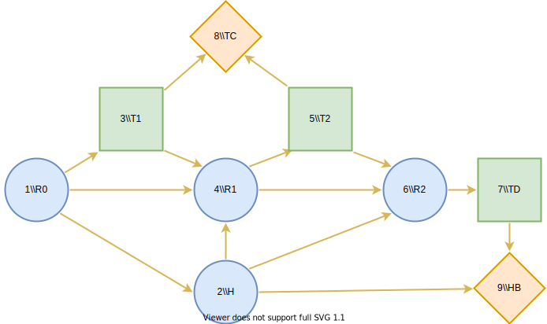

CHD preventative care allocation
Description
The goal in this optimisation problem is to determine an optimal decision strategy for the testing and treatment decisions involved in providing preventative care for coronary heart disease (CHD). The optimality is evaluated from the perspective of the national health care system and is measured in quality-adjusted life-years (QALY). The tests available in this model are the traditional risk score (TRS) and the genetic risk score (GRS) and the form of preventative care is statin treatment. The description of the CHD preventative care allocation problem is below. This description is from 1 from section 3.2.
The problem setting is such that the patient is assumed to have a prior risk estimate. A risk estimate is a prediction of the patient’s chance of having a CHD event in the next ten years. The risk estimates are grouped into risk levels, which range from 0% to 100%. The first testing decision is made based on the prior risk estimate. The first testing decision entails deciding whether TRS or GRS should be performed or if no testing is needed. If a test is conducted, the risk estimate is updated and based on the new information, the second testing decision is made. The second testing decision entails deciding whether further testing should be conducted or not. The second testing decision is constrained so that the same test which was conducted in the first stage cannot be repeated. If a second test is conducted, the risk estimate is updated again. The treatment decision – dictating whether the patient receives statin therapy or not – is made based on the resulting risk estimate of this testing process. Note that if no tests are conducted, the treatment decision is made based on the prior risk estimate.
In this example, we will showcase the subproblem, which optimises the decision strategy given a single prior risk level. The chosen risk level in this example is 12%. The solution to the main problem is found in 1.
Influence diagram
The influence diagram representation of the problem is seen above. The chance nodes RR represent the patient’s risk estimate – the prior risk estimate being \(R0\). The risk estimate nodes \(R0\), \(R1\) and \(R2\) have 101 states \(R = \{0\%, 1\%, ..., 100\%\}\), which are the discretised risk levels for the risk estimates.
The risk estimate is updated according to the first and second testing decisions, which are represented by decision nodes \(T1\) and \(T2\). These nodes have states \(T = \{\text{TRS, GRS, no test}\}\). The health of the patient, represented by chance node \(H\), also affects the update of the risk estimate. In this model, the health of the patient indicates whether they will have a CHD event in the next ten years or not. Thus, the node has states \(H = \{\text{CHD, no CHD}\}\). The treatment decision is represented by node \(TD\) and it has states \(TD = \{\text{treatment, no treatment}\}\).
The prior risk estimate represented by node \(R0\) influences the health node \(H\), because in the model we make the assumption that the prior risk estimate accurately describes the probability of having a CHD event.
The value nodes in the model are \(TC\) and \(HB\). Node \(TC\) represents the testing costs incurred due to the testing decisions \(T1\) and \(T2\). Node \(HB\) represents the health benefits achieved. The testing costs and health benefits are measured in QALYs. These parameter values were evaluated in the study 2.
We begin by declaring the chosen prior risk level and
reading the conditional probability data for the tests.
Note that the sample data in this repository is dummy data
due to distribution restrictions on the real data. We also
define functions update_risk_distribution and
state_probabilities. These functions will be
discussed in the following sections.
Warning
The code snippets given in this example are not complete. For a full, executable example, see examples/CHD.py in the repository.
import DecisionProgramming as dp
import numpy as np
import pandas as pd
from types import SimpleNamespace
dp.activate()
data = pd.read_csv("examples/risk_prediction_data.csv")
chosen_risk_level = "12%"
def update_risk_distribution(prior, t):
...
def state_probabilities(prior, t):
...
Initialise influence diagram
We start defining the Decision Programming model by initialising the influence diagram.
diagram = dp.InfluenceDiagram()
For brevity in the next sections, we define the states of the nodes to be readily available. Notice, that \(R_{states}\) is a vector with values \(0\%, 1\%,\dots,100\%\).
diagram = dp.InfluenceDiagram()
We then add the nodes. The chance and decision nodes are identified by their names. When declaring the nodes, they are also given information sets and states. Notice that nodes \(R0\) and \(H\) are root nodes, meaning that their information sets are empty. In Decision Programming, we add the chance and decision nodes in the following way.
diagram.add_node(dp.ChanceNode("R0", [], R_states))
diagram.add_node(dp.ChanceNode("R1", ["R0", "H", "T1"], R_states))
diagram.add_node(dp.ChanceNode("R2", ["R1", "H", "T2"], R_states))
diagram.add_node(dp.ChanceNode("H", ["R0"], H_states))
diagram.add_node(dp.DecisionNode("T1", ["R0"], T_states))
diagram.add_node(dp.DecisionNode("T2", ["R1"], T_states))
diagram.add_node(dp.DecisionNode("TD", ["R2"], TD_states))
The value nodes are added in a similar fashion. However, value nodes do not have states because they map their information states to utility values instead.
diagram.add_node(dp.ValueNode("TC", ["T1", "T2"]))
diagram.add_node(dp.ValueNode("HB", ["H", "TD"]))
Generate arcs
Now that all of the nodes have been added to the influence diagram we generate the arcs between the nodes. This step automatically orders the nodes, gives them indices and reorganises the information into the appropriate form.
diagram.generate_arcs()
Probabilities of the prior risk estimate and health of the patient
In this subproblem, the prior risk estimate is given and therefore the node \(R0\) is in effect a deterministic node. In Decision Programming a deterministic node is added as a chance node for which the probability of one state is set to one and the probabilities of the rest of the states are set to zero. In this case
and \(\mathbb P(R0\neq 12\%) = 1\)
The probability matrix of node \(R0\) is added in the
following way. Remember that the
diagram.construct_probability_matrix function
initialises the matrix with zeros.
X_R0 = diagram.construct_probability_matrix("R0")
X_R0[chosen_risk_level] = 1
diagram.set_probabilities("R0", X_R0)
Next we add the state probabilities of node \(H\). For modeling purposes, we define the information set of node \(H\) to include the prior risk node \(R0\). We set the probability that the patient experiences a CHD event in the next ten years according to the prior risk level such that
We set the probability that the patient does not experience a CHD event in the next ten years as the complement event.
Since node \(R0\) is deterministic and the health node \(H\) is defined in this way, in our model the patient has a 12% chance of experiencing a CHD event and 88% chance of remaining healthy.
In this Decision Programming model, the probability matrix of node \(H\) has dimensions (101, 2) because its information set consisting of node \(R0\) has 101 states and node \(H\) has 2 states. We first set the column related to the state \(CHD\) with values from data.risk_levels which are 0.00, 0.01, …, 0.99, 1.000.00,0.01,…,0.99,1.00 and the other column as its complement event.
X_H = diagram.construct_probability_matrix("H")
X_H[:, "CHD"] = data.risk_levels.tolist()
X_H[:, "no CHD"] = (1-data.risk_levels).tolist()
diagram.set_probabilities("H", X_H)
Probabilities of the updated the risk estimates
For node \(R1\), the probabilities of the states are calculated by aggregating the updated risk estimates into the risk levels after a test is performed. The updated risk estimates are calculated using the function update_risk_distribution, which calculates the posterior probability distribution for a given health state, test and prior risk estimate.
X_H = diagram.construct_probability_matrix("H")
X_H[:, "CHD"] = data.risk_levels.tolist()
X_H[:, "no CHD"] = (1-data.risk_levels).tolist()
diagram.set_probabilities("H", X_H)
Probabilities of the updated the risk estimates
For node \(R1\), the probabilities of the states are calculated by aggregating the updated risk estimates into the risk levels after a test is performed. The updated risk estimates are calculated using the function update_risk_distribution, which calculates the posterior probability distribution for a given health state, test and prior risk estimate.
The probabilities
\(P(\text{test result} \mid \text{CHD})\) are test
specific and these are read from the CSV data file. The
updated risk estimates are aggregated according to the
risk levels. These aggregated probabilities are then the
state probabilities of node \(R1\). The aggregating is
done using function state_probabilities.
In Decision Programming the probability distribution over the states of node \(R1\) is defined into a probability matrix with dimensions \((101,2,3,101)\). This is because its information set consists of nodes \(R0, H\) and, \(T\) which have 101, 2 and 3 states respectively and the node R1R1 itself has 101 states. Here, one must know that in Decision Programming the states of the nodes are mapped to numbers in the back- end. For instance, the health states \(\text{CHD}\) and \(\text{no CHD}\) are indexed 1 and 2. The testing decision states TRS, GRS and no test are 1, 2 and 3. The order of the states is determined by the order in which they are defined when adding the nodes. Knowing this, we can set the probability values into the probability matrix using a very compact syntax. Notice that we add 101 probability values at a time into the matrix.
X_R = diagram.construct_probability_matrix("R1")
for s_R0 in range(n_risk_levels):
for s_H in range(2):
for s_T1 in range(3):
risk = update_risk_distribution(s_R0, s_T1)
probs = state_probabilities(risk, s_T1, s_H, s_R0)
X_R[s_R0, s_H, s_T1, :] = probs.tolist()
diagram.set_probabilities("R1", X_R)
We notice that the probability distruption is identical in \(R1\) and \(R2\) because their information states are identical. Therefore we can simply add the same matrix from above as the probability matrix of node \(R2\).
diagram.set_probabilities("R2", X_R)
Utilities of testing costs and health benefits
We define a utility matrix for node \(TC\), which maps all its information states to testing costs. The unit in which the testing costs are added is quality-adjusted life- year (QALYs). The utility matrix is defined and added in the following way.
cost_TRS = -0.0034645
cost_GRS = -0.004
forbidden = 0 # the cost of forbidden test combinations is neglected
Y_TC = diagram.construct_utility_matrix("TC")
Y_TC["TRS", "TRS"] = forbidden
Y_TC["TRS", "GRS"] = cost_TRS + cost_GRS
Y_TC["TRS", "no test"] = cost_TRS
Y_TC["GRS", "TRS"] = cost_TRS + cost_GRS
Y_TC["GRS", "GRS"] = forbidden
Y_TC["GRS", "no test"] = cost_GRS
Y_TC["no test", "TRS"] = cost_TRS
Y_TC["no test", "GRS"] = cost_GRS
Y_TC["no test", "no test"] = 0
diagram.set_utility("TC", Y_TC)
The health benefits that are achieved are determined by whether treatment is administered and by the health of the patient. We add the final utility matrix to the model.
Y_HB = diagram.construct_utility_matrix("HB")
Y_HB["CHD", "treatment"] = utility_CHD_treated
Y_HB["CHD", "no treatment"] = utility_CHD_nottreated
Y_HB["no CHD", "treatment"] = utility_noCHD_treated
Y_HB["no CHD", "no treatment"] = utility_noCHD_nottreated
diagram.set_utility("HB", Y_HB)
Generate influence diagram
Finally, we generate the full influence diagram before defining the decision model. By default this function uses the default path probabilities and utilities, which are defined as the joint probability of all chance events in the diagram and the sum of utilities in value nodes, respectively. In the Contingent Portfolio Programming example, we show how to use a user-defined custom path utility function.
diagram.generate()
Decision Model
We define the JuMP model and declare the decision variables.
model = dp.Model()
z = diagram.decision_variables(model)
In this problem, we want to forbid the model from choosing paths where the same test is repeated twice and where the first testing decision is not to perform a test but the second testing decision is to perform a test. We forbid the paths by declaring these combinations of states as forbidden paths.
forbidden_tests = diagram.forbidden_path(["T1", "T2"], [("TRS", "TRS"), ("GRS", "GRS"), ("no test", "TRS"), ("no test", "GRS")])
We fix the state of the deterministic \(R0\) node by declaring it as a fixed path. Fixing the state of node \(R0\) is not necessary because of how the probabilities were defined. However, the fixed state reduces the need for some computation in the back-end.
fixed_R0 = diagram.fixed_path({"R0": chosen_risk_level})
We also choose a scale factor of 10000, which will be used to scale the path probabilities. The probabilities need to be scaled because in this specific problem they are very small since the \(R\) nodes have a large number of states. Scaling the probabilities helps the solver find an optimal solution.
We then declare the path compatibility variables. We fix the state of the deterministic \(R0\) node , forbid the unwanted testing strategies and scale the probabilities by giving them as parameters in the function call.
scale_factor = 10000.0
x_s = diagram.path_compatibility_variables(
model, z,
fixed=fixed_R0,
forbidden_paths=[forbidden_tests],
probability_cut=False,
probability_scale_factor=scale_factor
)
We define the objective function as the expected value.
EV = diagram.expected_value(model, x_s)
model.objective(EV, "Max")
We set up the solver for the problem and optimise it.
model.setup_Gurobi_optimizer(
("MIPFocus", 3),
("MIPGap", 1e-6)
)
model.optimize()
Analyzing results
We extract the results in the following way.
Z = z.decision_strategy()
S_probabilities = diagram.state_probabilities(Z)
U_distribution = diagram.utility_distribution(Z)
Decision strategy
We inspect the decision strategy. From the printout, we can see that when the prior risk level is 12% the optimal decision strategy is to first perform TRS testing. At the second decision stage, GRS should be conducted if the updated risk estimate is between 16% and 28% and otherwise no further testing should be conducted. Treatment should be provided to those who have a final risk estimate greater than 18%. Notice that the incompatible states are not included in the printout. The incompatible states are those that have a state probability of zero, which means that given this data it is impossible for the patient to have their risk estimate updated to those risk levels.
In [1]: S_probabilities.print_decision_strategy()
Out[1]:
┌────────────────┬────────────────┐
│ State(s) of R0 │ Decision in T1 │
├────────────────┼────────────────┤
│ 12% │ TRS │
└────────────────┴────────────────┘
┌────────────────┬────────────────┐
│ State(s) of R1 │ Decision in T2 │
├────────────────┼────────────────┤
│ 0% │ no test │
│ 1% │ no test │
│ 3% │ no test │
│ 6% │ no test │
│ 7% │ no test │
│ 10% │ no test │
│ 11% │ no test │
│ 13% │ no test │
│ 14% │ no test │
│ 16% │ GRS │
│ 17% │ GRS │
│ 18% │ GRS │
│ 21% │ GRS │
│ 22% │ GRS │
│ 23% │ GRS │
│ 28% │ no test │
│ 29% │ no test │
│ 31% │ no test │
│ 34% │ no test │
│ ⋮ │ ⋮ │
└────────────────┴────────────────┘
rows omitted
┌────────────────┬────────────────┐
│ State(s) of R2 │ Decision in TD │
├────────────────┼────────────────┤
│ 0% │ no treatment │
│ 1% │ no treatment │
│ 2% │ no treatment │
│ 3% │ no treatment │
│ 6% │ no treatment │
│ 7% │ no treatment │
│ 8% │ no treatment │
│ 9% │ no treatment │
│ 10% │ no treatment │
│ 11% │ no treatment │
│ 12% │ no treatment │
│ 13% │ no treatment │
│ 14% │ no treatment │
│ 15% │ no treatment │
│ 16% │ no treatment │
│ 17% │ no treatment │
│ 18% │ treatment │
│ 19% │ treatment │
│ 20% │ treatment │
│ ⋮ │ ⋮ │
└────────────────┴────────────────┘
rows omitted
Utility distribution
We can also print the utility distribution for the optimal strategy and some basic statistics for the distribution.
In [2]: S_probabilities.print_decision_strategy()
Out[2]:
┌──────────┬─────────────┐
│ Utility │ Probability │
│ Float64 │ Float64 │
├──────────┼─────────────┤
│ 6.646904 │ 0.005318 │
│ 6.650904 │ 0.038707 │
│ 6.889672 │ 0.011602 │
│ 6.893672 │ 0.064374 │
│ 7.637820 │ 0.034188 │
│ 7.641820 │ 0.073974 │
│ 7.693419 │ 0.035266 │
│ 7.697419 │ 0.736573 │
└──────────┴─────────────┘
In [3]: S_probabilities.print_statistics()
Out[3]:
┌──────────┬────────────┐
│ Name │ Statistics │
│ String │ Float64 │
├──────────┼────────────┤
│ Mean │ 7.583923 │
│ Std │ 0.291350 │
│ Skewness │ -2.414877 │
│ Kurtosis │ 4.059711 │
└──────────┴────────────┘
References
- 1(1,2)
Hankimaa H. (2021). Optimising the use of genetic testing in prevention of CHD using Decision Programming. http://urn.fi/URN:NBN:fi:aalto-202103302644
- 2
Hynninen Y. (2019). Value of genetic testing in the prevention of coronary heart disease events. PLOS ONE, 14(1):1–16. https://doi.org/10.1371/journal.pone.0210010